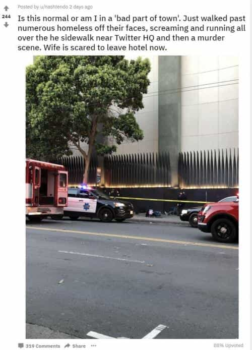
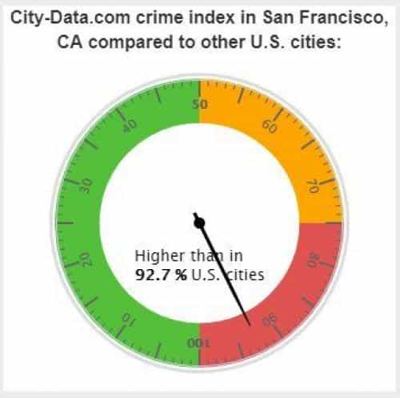
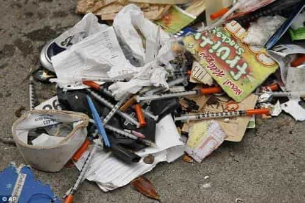
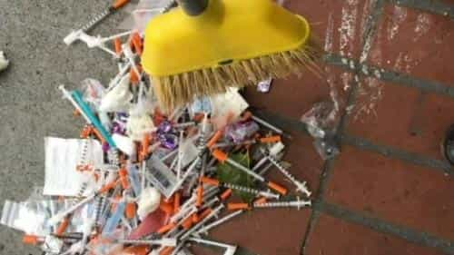
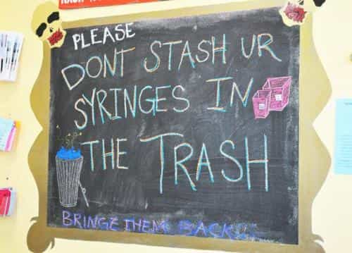

This account syndicates news from other media outlets.


San Francisco – a Democratic stronghold known for cable cars, quaint architecture and its diverse culture, has become a bastion of squalor and crime as city dwellers and visitors alike dodge aggressive, drug-addled vagrants. And it’s beginning to scare the tourists.
An Australian couple visiting the city were shocked by what they saw after deciding to walk back to their hotel:
“Is this normal or am I in a ‘bad part of town?’ Just walked past numerous homeless off their faces, screaming and running all over the sidewalk near Twitter HQ and then a murder scene. Wife is scared to leave hotel now,” reads a Wednesday posting by Reddit user /u/nashtendo.

When another Redditor said “put on your big boy pants… scared to leave the hotel?”…
The Aussie replied:
It was my wife that was scared and it was partly the mass of concentrated, drug affected homeless mixed with a guy being rolled into an ambulance dead. –/u/nashtendo
“We did La and Nyc on this trip too. Both felt safer,” he said later in the thread, adding “Syringes were visible, people were staggering, others had wide aggressive eyes. ‘Off their faces’ might be an Australian thing (sorry) but I meant just visibly drug affected.”

Another Reddit user replied:
It’s pretty normal. I’m honestly hoping tourists will realize how shitty this city has become and stop coming. Maybe the loss of income will finally push the city to stop allowing the rampant drug dealing and homeless people treating the entire city like their toilet. You would think a city that deoends so heavily on tourism and conventions for the bulk of their income would put more effort into maintaining a certain standard, but there is rampant drug dealing out in the open in some of the most heavily tourist areas. The city know about it, they just don’t care. –/u/SgtPeanutbutter
“You see things on the streets that are just not humane,” Kevin Carroll, executive director of the Hotel Council of San Francisco told The Chronicle‘s Heather Knight in April. “People come into hotels saying, ‘What is going on out there?’ They’re just shocked. … People say, ‘I love your city, I love your restaurants, but I’ll never come back.'”
In a completely seperate thread, another Reddit user posted in the San Francisco subreddit “Why is this city so terrifying?”
I’ve wanted to visit SF my entire life and I finally make it here and my goddddd it’s terrifying. Anyone have any advice for a tourist aside from “don’t be such a pussy.” –u/xnmb1
“The streets are filthy. There’s trash everywhere. It’s disgusting,” Joe D’Alessandro, president of S.F. Travel told the Chronicle’s Heather Knight in April. “I’ve never seen any other city like this — the homelessness, dirty streets, drug use on the streets, smash-and-grabs.”


The city, which hands out up to 4.8 million syringes each year, has struggled to figure out how to keep streets clean and safe for residents, while accommodating a growing homeless population and longstanding HIV and Hepatitis C epidemics. There are roughly 16,000 residents in San Francisco with HIV, and 13,000 with Hep C.
City Health Director Barbara Garcia estimated in 2016 that there were 22,000 intravenous drug users in San Francisco – around one for every 38.9 residents, while the city hands out roughly 400,000 needles per month.

Of the 400,000 needles distributed monthly, San Francisco receives around 246,000 back – meaning that there are roughly 150,000 discarded needles floating around each month – or nearly 2 million per year, according to Curbed.
Mayor Mark Farrell has said, repeatedly, in recent weeks that the problem of discarded syringes on city streets has become a sticking point for him, and the city promised millions of dollars to curb the problem of hazardous waste on sidewalks and streets.
Meanwhile, San Francisco Chronicle’s Matier and Ross chimed in Wednesday with an uncomfortable observation: Most of the needles littering streets in downtown neighborhoods came by way of the city itself, as part of the Department of Public Health’s 25-year-old needle exchange program. –Curbed
While certainly nowhere near the top of the list, crime is also a problem in San Francisco – which is higher than 92.7% of the United States according to city-data.com.
Don’t Miss: 10 Reasons Why San Francisco’s Women Are Worse Than Toronto’s